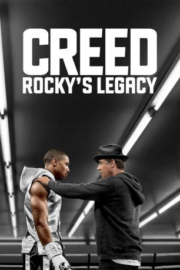

Auszeichnungen: für 1 Oscars nominiert 1 GoldenGlobes gewonnen
 gesehen am 03.05.2016
gesehen am 03.05.2016Alternativ: Creed
Auszeichnungen: für 1 Oscars nominiert 1 GoldenGlobes gewonnen gesehen am 03.05.2016
 
 IMDB-Wertung: 7.7 / 10
IMDB-Wertung: 7.7 / 10  Metascore:
Metascore: 
Nach seinem letzten Kampf hat sich Rocky Balboa endgültig aus dem aktiven Boxgeschäft zurückgezogen. Der einstige Weltmeister im Schwergewicht will nun sein Wissen und Können an die kommende Generation weitergeben und ist deshalb Trainer in einer Boxschule. Eines Tages taucht dort das junge Talent Adonis Creed auf – der Sohn von Apollo Creed. Adonis hat seinen Vater zwar nie kennengelernt, aber offenbar erbte er von ihm seine boxerischen Fähigkeiten. Um seine guten Anlagen auszubauen, will er sich von Rocky trainieren lassen. Rocky muss jedoch schnell erkennen, dass Adonis nicht nur einen Trainer, sondern auch einen Mentor braucht, der ihn auf den richtigen Weg bringt.
Jahr: 2015
Dauer: 133 Minuten
FSK: 12
Land: USA Studio: Warner Bros.Tonspuren: DD5.1 - ,
Untertitel: Deutsch,
Auflösung: 1080p (1920x800) Größe: 6850 MB
Regisseur: Ryan Coogler
Drehbuch: James McFarland
Soundtrack:
Darsteller:
 Michael B. Jordan als Adonis Johnson
Michael B. Jordan als Adonis Johnson Sylvester Stallone als Rocky Balboa
Sylvester Stallone als Rocky Balboa Tessa Thompson als Bianca
Tessa Thompson als Bianca Ritchie Coster als Pete Sporino
Ritchie Coster als Pete Sporino Jacob 'Stitch' Duran als Stitch
Jacob 'Stitch' Duran als Stitch Graham McTavish als Tommy Holiday
Graham McTavish als Tommy Holiday Wood Harris als Tony 'Little Duke' Burton
Wood Harris als Tony 'Little Duke' Burton Brian Anthony Wilson als James
Brian Anthony Wilson als James Roy James Wilson als City Jail Cop
Roy James Wilson als City Jail Cop Mauricio Ovalle als Flores' Trainer
Mauricio Ovalle als Flores' Trainer Mark Rhino Smith als Conlan's Buddy
Mark Rhino Smith als Conlan's Buddy Hans Marrero als Flores
Hans Marrero als Flores Frank Pesce als Mickey's Gym Doorman
Frank Pesce als Mickey's Gym Doorman Liev Schreiber als HBO 24 / 7 Narrator
Liev Schreiber als HBO 24 / 7 Narrator Michael Buffer als Michael Buffer
Michael Buffer als Michael Buffer Nelson Bonilla als Staff Member #2
Nelson Bonilla als Staff Member #2 Christopher Jon Gombos als Security Guard
Christopher Jon Gombos als Security Guard Robert Bizik als Sports Photograper for Boxing Ring Magazine , uncredited
Robert Bizik als Sports Photograper for Boxing Ring Magazine , uncredited Will Blagrove als James , uncredited
Will Blagrove als James , uncredited Todd Bobenrieth als Ringside VIP , uncredited
Todd Bobenrieth als Ringside VIP , uncredited Maria Breyman als Ricky's Friend , uncredited
Maria Breyman als Ricky's Friend , uncredited Stephen Chang als Asian Reporter , uncredited
Stephen Chang als Asian Reporter , uncredited Lyman Chen als Rocky Statue Tourist , uncredited
Lyman Chen als Rocky Statue Tourist , uncredited Peter Chiamardas als Boxing Fan , uncredited
Peter Chiamardas als Boxing Fan , uncreditedDatei: X:\7+mehr(A-Z)\Rocky\Creed Rocky's Legacy (2015, FSK12, 1920x800).mkv seit 02.05.2016
Festplatte: HD Collection-7+mehr(A-Z)+Person
 Es gibt insgesamt 11 Filme in der Gruppe '7+mehr(A-Z)\Rocky'
Es gibt insgesamt 11 Filme in der Gruppe '7+mehr(A-Z)\Rocky'